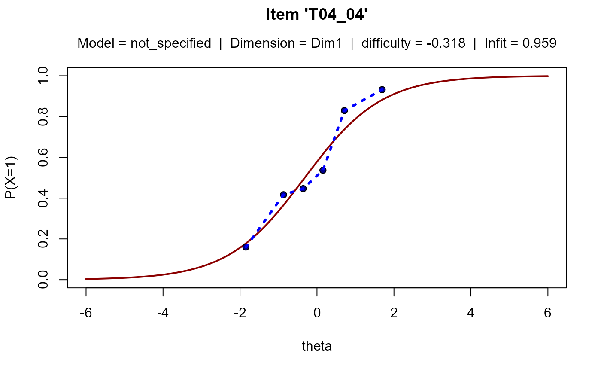

Plots item characteristic curves.
plotICC.RdFunction provides item characteristic plots for each item. To date, only dichotomous 1pl and 2pl models are supported.
Usage
plotICC ( resultsObj, defineModelObj, items = NULL, personPar = c("WLE", "EAP", "PV"),
personsPerGroup = 30, pdfFolder = NULL, smooth = 7 )Arguments
- resultsObj
The object returned by
getResults.- defineModelObj
The object returned by
defineModel.- items
Optional: A vector of items for which the ICC should be plotted. If NULL, ICCs of all items will be collected in a common pdf. The
pdfFolderargument must not be NULL if the ICC of more than one item should be plotted, i.e. if items is not NULL or a vector of length > 1.- personPar
Which person parameter should be used for plotting? To mimic the behavior of the S3 plot method of
TAM, use"WLE".- personsPerGroup
Specifies the number of persons in each interval of the theta scale for dividing the persons in various groups according to mean EAP score.
- pdfFolder
Optional: A folder with writing access for the pdf file. Necessary only if ICCs for more than one item should be plotted.
- smooth
Optional: A parameter (integer value) for smoothing the plot. If the number of examinees is high, the icc plot may become scratchy.
smoothdefines the maximum number of discrete nodes across the theta scale for evaluating the icc. Higher values result in a less smooth icc. To mimic the behavior of the S3 plot method ofTAM, use the value 7.
Examples
data(trends)
# choose only 2010
dat <- trends[which(trends[,"year"] == 2010),]
# choose reading
dat <- dat[which(dat[,"domain"] == "reading"),]
# first reshape the data set into wide format
datW <- reshape2::dcast(dat, idstud~item, value.var="value")
# defining the model: specifying q matrix is not necessary
mod1 <- defineModel(dat=datW, items= -1, id="idstud", software = "tam")
#> 17 subject(s) do not solve any item:
#> P00173 (6 false), P01137 (7 false), P02863 (23 false) ...
#> 97 subject(s) solved each item: P00078 (6 correct), P00389 (10 correct), P03338 (27 correct) ...
#> Dataset is completely linked.
#> 'gauss' has been chosen for estimation method. Number of nodes was not explicitly specified. Set nodes to 20.
#> Q matrix specifies 1 dimension(s).
# run the model
run1 <- runModel(mod1)
# get the results
res1 <- getResults(run1)
#> Getting standard errors with the tam.se function: 0.5 secs
#> Getting WLEs calling tam.wle from getTamWles: 0.6 secs
#> |*****|
#> |-----|
#> Getting PVs calling tam.pv from getTamPVs: 1.8 secs
#> Getting Q3 statistic calling tam.modelfit from getTamQ3: 0.5 secs
# plot for one item
plotICC ( resultsObj = res1, defineModelObj = mod1, items = "T04_04")
#> Note: To date, only 1pl/2pl dichotomous models are supported.
